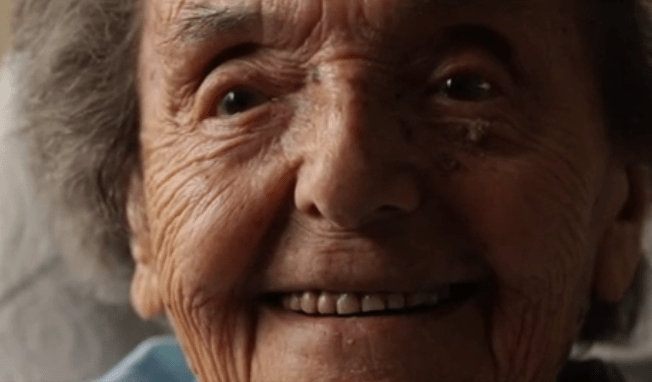

"You are successful that moment you are aware a choice made impact." – Benjamin Wechsler
Articles
Knowledge Through Awareness & Creativity
"I never hate...I never hate. Hatred only brings hatred!" - Alice Herz Sommer
Benjamin Wechsler | Leadership Development, Learning, Social Media
I just completed viewing the documentary, “The Lady in Number 6,” a remarkable story of the oldest survivor of the holocaust, Alice Herz Summer, who at the time of the documentary is 109 years old.
This is a must watch. My awareness of this film came from listening to a podcast by Tim Ferriss, prolific author of "The Four Hour Work Week," "Four Hour Body," and "Four Hour Chef."
What is remarkable about this film is that Alice Herz Sommer is a phenomenal pianist and talks throughout the film of the beauty of music, the profound strength and courage that music brings to the world and one’s life. We are witnesses to the tremendous challenges that Alice Summer experiences in her life, yet never gives in to the drama or negative aspects of our experience. She is always in joy, always in gratitude. Her story is one of great challenges, especially in Auschwitz, and yet she has no bitterness.
As a pianist, I am amazed that at 109 she can play Bach and Chopin with such agility and ease. Her whole presence glows with spiritual grace and happiness.
In today’s world, where we experience constant threads of hatred, violence, destructive labels for people because of who they are by race, religion, or sexual preference, this woman exudes love and joy. We hear the beauty of harmony in the world as we watch this film. We hear of great leadership, that when in moments of turmoil an challenge, email calm. It is through calm that we have strength.
“I never hate …I never hate. Hatred only brings hatred!”
If you want to challenge your view of your own life. If you want to realign your view of your life’s condition or troubles, this is a must see. It is the best 38 minutes you can spend.
“The Lady in Number 6: Music Saved My Life” is available for viewing on Netflix, or on Vimeo On Demand at https://vimeo.com/ondemand/5182.